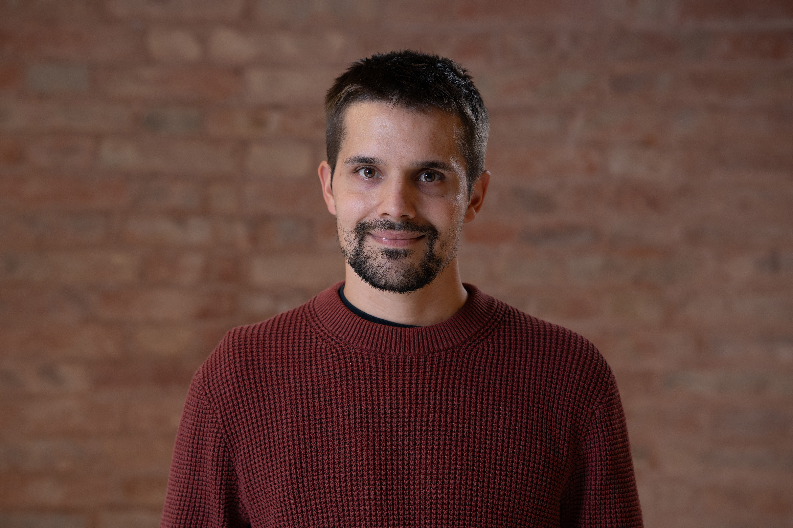

Researcher in Social Statistics
Department of Economics, Ca’ Foscari
University of Venice
I am a social and applied statistician. My research starts from substantive problems in health, society, the environment and sport. These problems often involve complex data: observations repeated over time, geographical and population heterogeneity, multiple sources of uncertainty, missing information and relationships that cannot be adequately represented by simple models.
I develop and apply statistical methods that account for this complexity while remaining interpretable and useful for researchers, institutions and decision-makers. My methodological interests include Bayesian statistics, hierarchical and state-space models, time series, computational statistics, survey data and interpretable machine learning.
I am currently a fixed-term researcher (RTD-A) at Ca’ Foscari University of Venice, where I work on the PLANET4HEALTH project and am a member of the so.sta. — Social Statistics research team. I previously worked on health inequalities and multimorbidity within the Age-It project. I received my PhD in Statistical Sciences from the University of Padova in 2022 with a dissertation on sports performance analysis using state-space models.